Introduction
The µ-Doppler DPU is called in the processing chain after the tracker DPU. It performs the following functionality for each tracking target:
- computation of the µ-Doppler spectrum from the reflections around the detected object,
- feature extraction from the computed µ-Doppler spectrum,
- classification of the tracking object based on the extracted features to distinguish between human and non-human object.
The µ-Doppler DPU can only be enabled when the tracker DPU is enabled. The top-level diagram is shown in Figure below. The DPU input consists of:
- group tracker data including the list of the tracking objects and the target index array,
- radar cube data from the major motion detection chain.
The DPU output, for each tracking object, consists of:
- µ-Doppler spectrum,
- feature set, and
- classifier prediction result.
Block Diagram
The top-level block diagram of the DPU is shown in the figure below.

Micro-Doppler DPU top-level diagram
Udop DPU Functioning
Micro-Doppler Computation and Feature Extraction
The µ-Doppler computation is performed by HWA, while the feature extraction is performed by CPU. The execution of these two steps is parallelized when the number of targets is more than one. Figure below shows the processing flow. The computed µ-Doppler spectrum is placed in a ping pong buffer to enable parallel execution. Based on the target coordinates, the CPU configures HWA/EDMA, triggers HWA processing and waits for the HWA completion. After the completion, if there are more targets in the input list, it configures HWA/EDMA for the next target, and triggers it. It then proceeds with the feature extraction on the computed µ-Doppler spectrum, and loops back to the wait state for the next target µ-Doppler spectrum. This loop is repeated until all targets of the current frame are processed. The timing diagram of the µ-Doppler computation and the feature extraction for three tracking objects is illustrated. The computed µ-Doppler spectra are stored in the 2D floating point array as 𝑋𝜇−𝐷𝑜𝑝𝑝𝑙𝑒𝑟[𝑡𝑟𝑎𝑐𝑘𝐼𝑛𝑑𝑒𝑥][𝑑𝑜𝑝𝑝𝑙𝑒𝑟𝐼𝑛𝑑𝑒𝑥] where the 𝑡𝑟𝑎𝑐𝑘𝐼𝑛𝑑𝑒𝑥 is the index of the target in the list. The output of the feature extraction is feature set stored in a 2D floating point array as 𝑋𝑓𝑒𝑎𝑡𝑢𝑟𝑒𝑠[𝑡𝑟𝑎𝑐𝑘𝐼𝑛𝑑𝑒𝑥][𝑓𝑒𝑎𝑡𝑢𝑟𝑒𝐼𝑛𝑑𝑒𝑥].
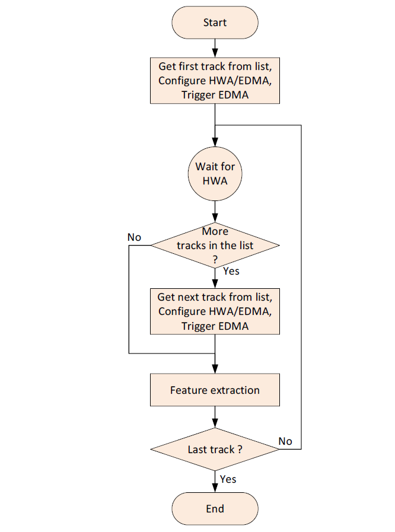
Micro-Doppler and Feature extraction - execution flow per frame
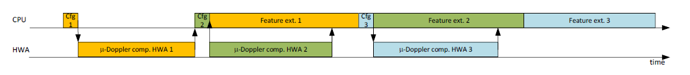
Timing diagram example for 𝜇-Doppler computation and feature extraction for three tracking objects
Micro-Doppler Computation
Detailed diagram of µ-Doppler computation on the HWA is shown in Figure 33. Most of the param sets of the HWA and EDMA are configured one time by the DPU configuration function, while some parameters are configured per target. Two approaches are supported for µ-Doppler extraction per tracked object:
- Approach using azimuth FFT: the µ-Doppler spectrum is calculated and accumulated vicinity of the target centroid position, for all range/angle bins included in the area defined by the target size as illustrated in Figure below
- Approach using beamforming: the µ-Doppler spectrum is calculated using a Bartlett beamforming by pointing to a centroid angle and accumulated across range bins in the vicinity of the target centroid position.
The computation approach is selected by the parameter genApproach of the CLI configuration command microDopplerCfg.

Illustration of included points on the range/azimuth grid over which the µ-Doppler is extracted and accumulated.

Micro-Doppler computation using HWA.
HWA/EDMA configuration
The number of included range bins on each side of the center bin, 𝑛𝑟𝑎𝑛𝑔𝑒, is common for all targets and it is calculated one time at the startup as
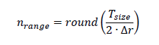
where 𝑇𝑠𝑖𝑧𝑒 is a target size and Δ𝑟 is a range resolution, i.e. a bin to range (in meters) conversion factor. The target size 𝑇𝑠𝑖𝑧𝑒 is specified by parameter targetSize of the CLI command microDopplerCfg. The group tracker output coordinates of the tracking object are first converted to spherical coordinates and the center range and azimuth bins are calculated. The target range is calculated as
And the nearest range bin 𝑖𝑐𝑒𝑛𝑡𝑒𝑟 as
The azimuth FFT index 𝑗𝑐𝑒𝑛𝑡𝑒𝑟 of the centroid is calculated as
The number of azimuth bins, 𝑛𝑎𝑧𝑖𝑚𝑢𝑡ℎ, included on each side of the centroid index 𝑗𝑐𝑒𝑛𝑡𝑒𝑟, depends on the range and azimuth angle of the target. It is calculated as
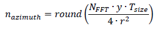
The value of 𝑛𝑎𝑧𝑖𝑚𝑢𝑡ℎ is then limited to 7.
In the azimuth FFT approach, the µ-Doppler spectrum is calculated and accumulated over all range/azimuth bins included in the area 𝑖𝑐𝑒𝑛𝑡𝑒𝑟±𝑛𝑟𝑎𝑛𝑔𝑒 and 𝑗𝑐𝑒𝑛𝑡𝑒𝑟±𝑛𝑎𝑧𝑖𝑚𝑢𝑡ℎ i.e.
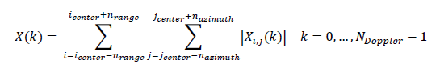
where 𝑋𝑖,𝑗(𝑘) is the Doppler FFT corresponding to range bin at 𝑖 and azimuth bin 𝑗. This is illustrated in Figure below.
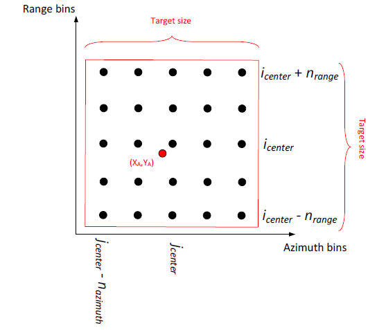
The range/azimuth grid from which the Doppler spectrum is computed
In the beamforming approach the µ-Doppler spectrum is calculated and accumulated over all range bins included in 𝑖𝑐𝑒𝑛𝑡𝑒𝑟±𝑛𝑟𝑎𝑛𝑔𝑒 i.e.
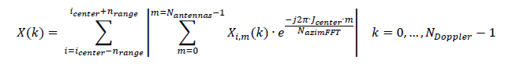
where 𝑋𝑖,𝑚(𝑘) is the Doppler FFT corresponding to range bin 𝑖 and antenna column index 𝑚.
The source address of the input EDMA is set to point into the radar cube at the range bin 𝑖𝑐𝑒𝑛𝑡𝑒𝑟− 𝑛𝑟𝑎𝑛𝑔𝑒. The number of HWA range processing loops is fixed for all targets and is set to (2𝑛𝑟𝑎𝑛𝑔𝑒+1).
In the azimuth FFT approach, the azimuth FFT HWA param set is configured such that the input antenna symbols 𝑋𝑖,𝑚(𝑘), 𝑚=0,…,𝑁𝑎𝑛𝑡𝑒𝑛𝑛𝑎𝑠−1 are modulated (pre-multiplied) with the sequence 𝑒^(−𝑗2𝜋∙(𝑗𝑐𝑒𝑛𝑡𝑒𝑟−𝑛𝑎𝑧𝑖𝑚𝑢𝑡ℎ)∙𝑚/𝑁𝑎𝑧𝑖𝑚𝑢𝑡ℎ𝐹𝐹𝑇), where 𝑚 is a column index in the virtual antenna array, so that the output Azimuth FFT bin (𝑗𝑐𝑒𝑛𝑡𝑒𝑟−𝑛𝑎𝑧𝑖𝑚𝑢𝑡ℎ) comes out first as illustrated in Figure below. The number of output bins is set to (2𝑛𝑎𝑧𝑖𝑚𝑢𝑡ℎ+1). The param set is configured to output magnitude values.
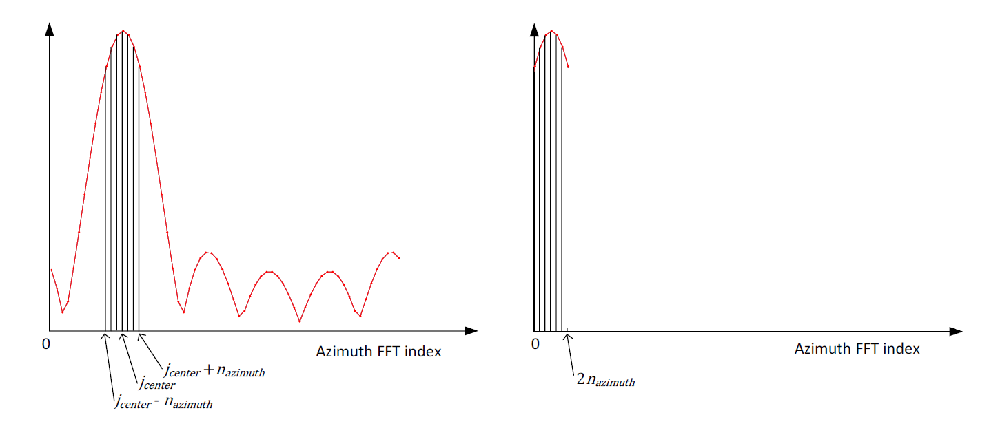
Azimuth FFT output example: (left) original FFT output, (right) HWA FFT engine output with complex multiplication in the pre-processing block including only the bins over which the accumulation is applied.
In the beam-forming approach, in the same param set, the FFT is disabled, while the input antenna symbols 𝑥(𝑘) are modulated (pre-multiplied) with the sequence 𝑒^(−𝑗2𝜋∙𝑗𝑐𝑒𝑛𝑡𝑒𝑟∙𝑚/𝑁𝐹𝐹𝑇), where 𝑚 is a column index in the virtual antenna array. At the output in the statistics block the summation is enabled to complete the beamforming operation.
HWA/DMA Execution
The execution is started by triggering the EDMA to zero out the memory in HWA where the µ-Doppler spectrum is accumulated over the range bins. This EDMA then starts the EDMA/HWA execution of the following steps in the loop, per range bin:
- The Input EDMA copies current range bin data from the radar cube into HWA memory as a 2D array arrangement as complex16 𝑋𝐴[𝑐ℎ𝑖𝑟𝑝][𝑎𝑛𝑡𝑒𝑛𝑛𝑎].
- Rx phase compensation is applied per antenna. The result is saved as complex16 𝑋𝐵[𝑐ℎ𝑖𝑟𝑝][𝑎𝑛𝑡𝑒𝑛𝑛𝑎]. The compensation coefficients are specified by the CLI command compRangeBiasAndRxChanPhase and loaded to HWA memory during the configuration time.
- µ-Doppler computation: The µ-Doppler FFT is computed by per antenna by a sequence of HWA param sets that also perform antenna symbol mapping so that the output comes out as a 3D complex32 array with the following index order 𝑋𝐶[𝑟𝑜𝑤][𝑑𝑜𝑝𝑝𝑙𝑒𝑟][𝑐𝑜𝑙], where 𝑟𝑜𝑤 and 𝑐𝑜𝑙 are row and column indices of the 2D virtual antenna array, as illustrated in Figure below for IWRL6432 EVM antenna layout. The Doppler FFT param sets are configured using the lookup table doaRngGateCfg which has been computed from the outside of the DPU using the function MmwDemo_cfgDopplerParamMapping() during the configuration time.
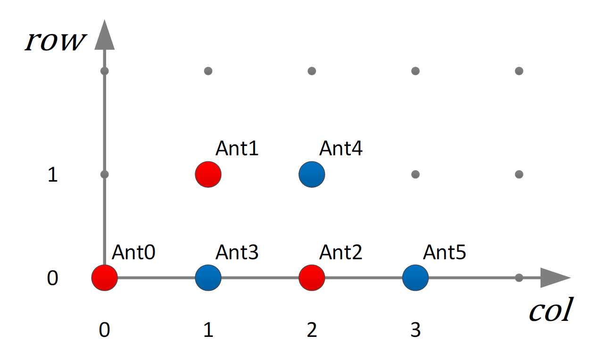
2D virtual antenna array for IWRL6432 EVM
- Summing antenna symbols across rows. If the number of rows of the virtual antenna array is more than one, the HWA param set is executed to add antenna rows forming the array as 𝑋𝐷[𝑑𝑜𝑝𝑝𝑙𝑒𝑟][𝑐𝑜𝑙]. The sum operation is implemented using the FFT.
- Accumulation along the azimuth bins, depending on the selected approach:
- FFT approach: Per Doppler bin, runs complex multiplication in “frequency shifter” mode, azimuth FFT, and outputs magnitudes of selected azimuth bins, and outputs as uint32 𝑋𝐸[𝑑𝑜𝑝𝑝𝑙𝑒𝑟][𝑎𝑧𝑖𝑚𝑢𝑡ℎ]. And Per Doppler bin, runs accumulation of selected azimuth bins using statistics block, and outputs as uint32 𝑋𝐹[𝑑𝑜𝑝𝑝𝑙𝑒𝑟]. (Note that imaginary component is zero).
- Beamforming approach: Per Doppler bin, performs beamforming in the azimuth direction of the target centroid position: complex multiplication in “frequency shifter” mode with summation in statistics block, output as complex32 𝑋𝐸[𝑑𝑜𝑝𝑝𝑙𝑒𝑟]. And Per Doppler bin, does absolute value and single bin summation through the statistics block as output uint32 𝑋𝐹[𝑑𝑜𝑝𝑝𝑙𝑒𝑟].
- Summation of the current range iteration result with the output from the previous range iteration. Summation using statistics block, output as uint32 𝑋𝐺[𝑑𝑜𝑝𝑝𝑙𝑒𝑟].
- Copy accumulated µ-Doppler spectrum to the input position (memory M3+8KB) for the next range bin iteration, output as uint32 𝑋𝐻[𝑑𝑜𝑝𝑝𝑙𝑒𝑟].
- Trigger the next loop iteration or end the loop. Triggers EDMA that chains back to the input EDMA, except in the last iteration when it chains to the final output EDMA that copies the computed target µ-Doppler spectrum to the output ping/pong buffer.
Feature Extraction
The feature extraction is executed by the function DPU_uDopProc_ FeatExtraction() and it is called per track. The block diagram is shown in Figure below. The function inputs the µ-Doppler array, located in the ping/pong buffer, (computed by HWA), extracts the features, and appends them to the features array and final m-Doppler array. These two arrays hold the results of the tracks of the current frame in the order they are arranged in the tracker output list. The feature extraction per track is executed in two steps:
- µ-Doppler pre-processing, and
- Feature extraction computation
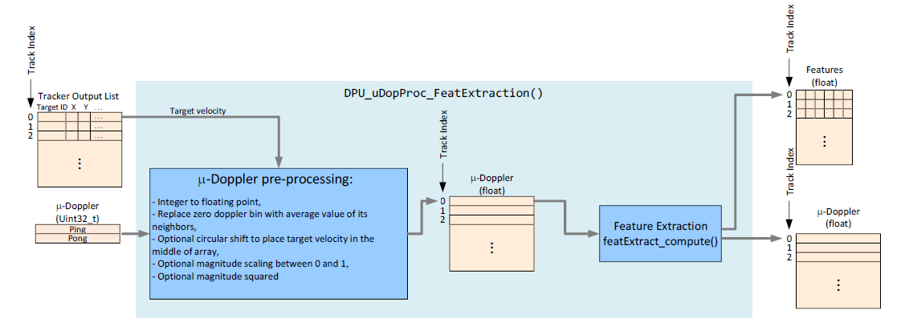
Feature extraction top level block diagram
Micro-Doppler pre-processing
The µ-Doppler preprocessing includes:
- Conversion from unsigned integer to floating point,
- Replacement of the zero doppler bin with the average value of its neighbors, i.e. 𝑋(0) = (𝑋(1)+𝑋(𝑁𝐷𝑜𝑝𝑝𝑙𝑒𝑟𝐹𝐹𝑇−1))/2,
- Optionally circular shift to place a target radial velocity in the middle of the µ-Doppler array if this option is enabled by the parameter circShiftCentroid of the CLI command microDopplerCfg. If this option is disabled, circular shift to place a zero Doppler bin in the middle of the µ-Doppler array.
- Optional Scaling the magnitude values between 0 and 1. This option is enabled by the parameter normalizedSpectrum of the CLI command microDopplerCfg.
- Optional magnitude squared. This option is enabled by the parameter magnitudeSquared of the CLI command microDopplerCfg.
The target radial velocity is calculated from the tracker output data as 𝑣𝑟𝑎𝑑𝑖𝑎𝑙 = (𝑥𝑣𝑥+𝑦𝑣𝑦+𝑧𝑣𝑧) / 𝑟 And the target doppler index for the circular shift as
where Δ𝑣 is Doppler resolution, i.e. bin to m/sec conversion factor.
Feature Extraction computation
The feature extraction is done by function featExtract_compute() from the feature extraction library included in this SDK release and located in folder source/alg/featExtract/spectrumBased/lib. Currently the feature extraction includes the computation of the following features:
- Lower frequency border of the occupied bandwidth,
- Upper frequency border of the occupied bandwidth,
- Power within the occupied bandwidth,
- Mean frequency of the power spectral density estimate,
- Median frequency of the power spectral density estimate,
- Spectral entropy of the power spectral density estimate,
In addition, this function optionally circularly shifts the input µ-Doppler spectrum so that the estimated mean value is positioned in the middle of the array. This option is enabled by the parameter specShiftMode of the CLI command microDopplerCfg.
Target Classification
The target classification process is illustrated in Figure below. During the configuration time, the classifier is configured to handle the maximum number of track IDs. The maximum number of tracks that can be tracked at a given time is configured by the parameter maxNumTracks of the CLI command trackingCfg. The memory is allocated to hold the feature history for each possible track ID. The feature history along with the relevant parameters per feature ID is stored in the structure DPU_uDopProc_FeatureObj. Note that the tracker assigns track ID numbers in the range 0 to maxNumTracks-1. The classification process, in the loop, for each track ID, checks if the feature set for that track ID is present in the current frame, and if it is, it saves it into the circular buffer of size 𝑀×𝑁, where 𝑁 is number of frames and 𝑀 number of features per track used for the classification. In the code 𝑁 is defined as CLASSIFIER_NUM_FRAMES, and 𝑀 is defined as CLASSIFIER_NUM_FEATURES. Currently the following features are saved and used for the classification:
- Lower frequency border of the occupied bandwidth,
- Upper frequency border of the occupied bandwidth,
- Power within the occupied bandwidth,
- Spectral entropy of the power spectral density estimate,
The process also updates three parameters per track ID that determine whether the classification will be called. The parameters are
- 𝑁𝑝 – the number of frames the features of this track ID were present in the last N frames,
- 𝑁𝑚 – the number of frames the features of this track ID were missed in the last N frames, and not recovered using the interpolation between neighbor frames,
- 𝑁𝑐𝑚 – the number of frames the features of this track ID were missed in the last N frames.
If all the following three conditions are met: 𝑁𝑝=𝑁, 𝑁𝑚=0, and 𝑁𝑐𝑚≤𝑁𝑚𝑖𝑠𝑠 the features are copied into a temporary linear buffer and the classifier prediction function classifier_predict() is called. The threshold 𝑁𝑚𝑖𝑠𝑠 is specified through the CLI command classifierCfg by the parameter missTotFrmThre. The classification output is the uint8_t array of two elements: the first element is the prediction value for the class “Non-human”, and the second element is the prediction value for the class “Human”. The values are represented in Q7 format (the value one is showed as 128). The two-element prediction result is stored in the circular buffer of the same length as the feature length buffer (although in the present implementation only the current output is used). If the above three conditions are not met, the values {0.5,0.5} (that is {64,64} in Q7 format), are placed in the output circular buffer.
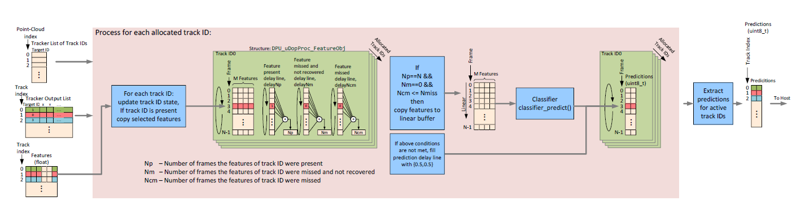
Target classification process
The flow diagram per track ID of the classification process is shown in Figure below. The input to classification process is the array of computed features, and 𝑁𝑝𝑡, the number of detected points associated with the current track. In the decision process, 𝑁𝑝𝑡 is compared against 𝑁𝑚𝑖𝑛, where 𝑁𝑚𝑖𝑛 is the minimum number of detected points required for a track to run the classifier for it. The threshold 𝑁𝑚𝑖𝑛 is specified by parameter minNumPntsPerTrack of the CLI command classifierCfg.
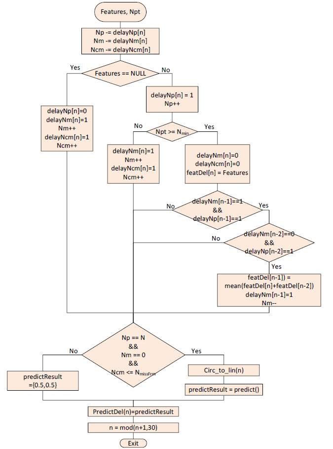
Target ID classification processing flow
After all track IDs are processed the result of the active tracks of the current frame are copied to the final output 2D uint8_t array as 𝑋𝑝𝑟𝑒𝑑𝑖𝑐𝑡[𝑡𝑟𝑎𝑐𝑘𝐼𝑛𝑑𝑒𝑥][𝑐𝑙𝑎𝑠𝑠𝐼𝑛𝑑𝑒𝑥] with the predictions stored in in Q7 format.
Usage Overview
API
The µ-Doppler DPU APIs are listed below.
- DPU_uDopProc_init(): It allocates memory to store its internal data object.
- DPU_uDopProc_config(): The function is configuration function. It configures DPU parameters, it calls feature featExtract_create(), and classifier_create(), and then configure HWA and EDMA param sets.
- DPU_uDopProc_process(): The function is DPU process function. It is called per frame in the processing chain after the Tracker DPU.
- DPU_uDopProc_deinit(): It frees up the resources of this DPU.
Example Usage
Include the below file to access the APIs
DPU Initialization Example
if (microDopDpuHandle == NULL)
{
DebugP_log (
"Debug: Micro-Doppler Proc DPU initialization returned error %d\n", errorCode);
return;
}
DPU Configuration Parsing Example
hwRes = &uDopProcDpuCfg.hwRes;
uDopStaticCfg = &uDopProcDpuCfg.staticCfg;
if (!(gMmwMssMCB.trackerCfg.staticCfg.trackerEnabled & gMmwMssMCB.enableMajorMotion))
{
retVal = DPC_OBJECTDETECTION_EINVAL_CFG;
goto exit;
}
uDopStaticCfg->numAntRow = gMmwMssMCB.numAntRow;
uDopStaticCfg->numAntCol = gMmwMssMCB.numAntCol;
uDopStaticCfg->angleDimension = gMmwMssMCB.angleDimension;
uDopStaticCfg->numDopplerChirps = gMmwMssMCB.frameCfg.h_NumOfBurstsInFrame * gMmwMssMCB.frameCfg.h_NumOfChirpsInBurst / gMmwMssMCB.numTxAntennas;
uDopStaticCfg->numDopplerBins = mathUtils_pow2roundup(uDopStaticCfg->numDopplerChirps);
uDopStaticCfg->numRangeBins = gMmwMssMCB.numRangeBins;
uDopStaticCfg->numRxAntennas = gMmwMssMCB.numRxAntennas;
uDopStaticCfg->numVirtualAntennas = gMmwMssMCB.numRxAntennas * gMmwMssMCB.numTxAntennas;
uDopStaticCfg->log2NumDopplerBins = mathUtils_ceilLog2(uDopStaticCfg->numDopplerBins);;
uDopStaticCfg->numTxAntennas = gMmwMssMCB.numTxAntennas;
uDopStaticCfg->maxNumTracks = gMmwMssMCB.trackerCfg.staticCfg.gtrackModuleConfig.maxNumTracks;
adcStart = (gMmwMssMCB.adcStartTime * 1.e-6);
startFreq = (float)(gMmwMssMCB.startFreq * 1.e9);
slope = (float)(gMmwMssMCB.chirpSlope * 1.e12);
bandwidth = (slope * gMmwMssMCB.profileComCfg.h_NumOfAdcSamples)/(gMmwMssMCB.adcSamplingRate * 1.e6);
centerFreq = startFreq + bandwidth * 0.5f + adcStart * slope;
uDopStaticCfg->rangeStep = (MMWDEMO_RFPARSER_SPEED_OF_LIGHT_IN_METERS_PER_SEC * (gMmwMssMCB.adcSamplingRate * 1.e6)) /
(2.f * slope * (2*gMmwMssMCB.numRangeBins));
if (gMmwMssMCB.frameCfg.h_NumOfBurstsInFrame > 1)
{
uDopStaticCfg->dopplerStep = MMWDEMO_RFPARSER_SPEED_OF_LIGHT_IN_METERS_PER_SEC /
(2.f * uDopStaticCfg->numDopplerBins *
centerFreq * (gMmwMssMCB.burstPeriod * 1e-6));
}
else
{
uDopStaticCfg->dopplerStep = MMWDEMO_RFPARSER_SPEED_OF_LIGHT_IN_METERS_PER_SEC /
(2.f * gMmwMssMCB.frameCfg.h_NumOfChirpsInBurst *
centerFreq * ((gMmwMssMCB.profileTimeCfg.h_ChirpIdleTime + gMmwMssMCB.profileComCfg.h_ChirpRampEndTime) * 1e-1 * 1e-6));
}
uDopStaticCfg->angleDimension = gMmwMssMCB.angleDimension;
uDopStaticCfg->isDetMatrixLogScale = false;
uDopStaticCfg->azimuthFftSize = gMmwMssMCB.sigProcChainCfg.azimuthFftSize;
uDopStaticCfg->elevationFftSize = gMmwMssMCB.sigProcChainCfg.elevationFftSize;
uDopStaticCfg->isStaticClutterRemovalEnabled = gMmwMssMCB.staticClutterRemovalEnable;
uDopStaticCfg->isRxChGainPhaseCompensationEnabled = true;
uDopStaticCfg->cliCfg = gMmwMssMCB.microDopplerCliCfg;
uDopStaticCfg->microDopplerClassifierCliCfg = gMmwMssMCB.microDopplerClassifierCliCfg;
hwRes->uDopplerHwaOutput = DPC_ObjDet_MemPoolAlloc(&gMmwMssMCB.CoreLocalRamObj,
uDopStaticCfg->numDopplerBins * sizeof(uint32_t) * 2,
sizeof(uint32_t));
if (hwRes->uDopplerHwaOutput == NULL)
{
retVal = DPC_OBJECTDETECTION_ENOMEM__MICRO_DOPPLER_BUFFER;
goto exit;
}
gMmwMssMCB.uDopProcOutParams.uDopplerOutput = (float *) DPC_ObjDet_MemPoolAlloc(&gMmwMssMCB.CoreLocalRamObj,
uDopStaticCfg->numDopplerBins * sizeof(float) * TRACKER_MAX_NUM_TR,
sizeof(float));
if (gMmwMssMCB.uDopProcOutParams.uDopplerOutput == NULL)
{
retVal = DPC_OBJECTDETECTION_ENOMEM__MICRO_DOPPLER_BUFFER;
goto exit;
}
gMmwMssMCB.uDopProcOutParams.uDopplerFeatures = (FeatExtract_featOutput *) DPC_ObjDet_MemPoolAlloc(&gMmwMssMCB.CoreLocalRamObj,
sizeof(FeatExtract_featOutput) * TRACKER_MAX_NUM_TR,
sizeof(float));
if (gMmwMssMCB.uDopProcOutParams.uDopplerFeatures == NULL)
{
retVal = DPC_OBJECTDETECTION_ENOMEM__MICRO_DOPPLER_FEATURES;
goto exit;
}
edmaCfg->edmaResetIn.channel = DPC_OBJDET_DPU_UDOP_PROC_EDMA_RESET_CH;
edmaCfg->edmaResetIn.channelShadow = DPC_OBJDET_DPU_UDOP_PROC_EDMA_RESET_SHADOW;
edmaCfg->edmaResetIn.eventQueue = DPC_OBJDET_DPU_UDOP_PROC_EDMARESET_EVENT_QUE;
edmaCfg->edmaChainOut.channel = DPC_OBJDET_DPU_UDOP_PROC_EDMAOUT_CHAIN_CH;
edmaCfg->edmaChainOut.ShadowPramId[0] = DPC_OBJDET_DPU_UDOP_PROC_EDMAOUT_CHAIN0_SHADOW;
edmaCfg->edmaChainOut.ShadowPramId[1] = DPC_OBJDET_DPU_UDOP_PROC_EDMAOUT_CHAIN1_SHADOW;
edmaCfg->edmaChainOut.eventQueue = DPC_OBJDET_DPU_UDOP_PROC_EDMAOUT_CHAIN_EVENT_QUE;
edmaCfg->edmaMicroDopOut.channel = DPC_OBJDET_DPU_UDOP_PROC_EDMAOUT_UDOPPLER_CH;
edmaCfg->edmaMicroDopOut.channelShadow = DPC_OBJDET_DPU_UDOP_PROC_EDMAOUT_UDOPPLER_SHADOW;
edmaCfg->edmaMicroDopOut.eventQueue = DPC_OBJDET_DPU_UDOP_PROC_EDMAOUT_UDOPPLER_EVENT_QUE;
edmaCfg->
intrObj = &intrObj_uDopProc;
hwaCfg->
dmaTrigSrcChan = DPC_ObjDet_HwaDmaTrigSrcChanPoolAlloc(&gMmwMssMCB.HwaDmaChanPoolObj);
{
int32_t rxInd, txInd;
int32_t ind = 0;
uDopStaticCfg->compRxChanCfg.rangeBias = gMmwMssMCB.compRxChannelBiasCfg.rangeBias;
for (txInd = 0; txInd < uDopStaticCfg->numTxAntennas; txInd++)
{
for (rxInd = 0; rxInd < uDopStaticCfg->numRxAntennas; rxInd++)
{
uDopStaticCfg->compRxChanCfg.rxChPhaseComp[ind++] = gMmwMssMCB.compRxChannelBiasCfg.rxChPhaseComp[gMmwMssMCB.rxAntOrder[rxInd] + (txInd * SYS_COMMON_NUM_RX_CHANNEL)];
}
}
}
retVal = MmwDemo_cfgDopplerParamMapping(&hwRes->doaRngGateCfg, DOPPLER_OUTPUT_MAPPING_ROW_DOP_COL);
if (retVal < 0)
{
goto exit;
}
hwRes->scratchBuf.sizeBytes = (uDopStaticCfg->numDopplerBins + 1) * sizeof(float);
if (uDopStaticCfg->microDopplerClassifierCliCfg.enabled)
{
uint32_t classifierScratchBuffSizeBytes = classifier_bytes_needed();
if (classifierScratchBuffSizeBytes > hwRes->scratchBuf.sizeBytes)
{
hwRes->scratchBuf.sizeBytes = classifierScratchBuffSizeBytes;
}
}
hwRes->scratchBuf.data = DPC_ObjDet_MemPoolAlloc(&gMmwMssMCB.CoreLocalRamObj,
hwRes->scratchBuf.sizeBytes,
sizeof(float));
if (hwRes->scratchBuf.data == NULL)
{
retVal = DPC_OBJECTDETECTION_ENOMEM__MICRO_DOPPLER_FEATURES;
goto exit;
}
if (uDopStaticCfg->microDopplerClassifierCliCfg.enabled)
{
hwRes->featureObj = DPC_ObjDet_MemPoolAlloc(&gMmwMssMCB.CoreLocalRamObj,
sizeof(float));
if (hwRes->featureObj == NULL)
{
retVal = DPC_OBJECTDETECTION_ENOMEM__MICRO_DOPPLER_FEATURES;
goto exit;
}
hwRes->scratchBuf2.data = DPC_ObjDet_MemPoolAlloc(&gMmwMssMCB.CoreLocalRamObj,
hwRes->scratchBuf2.sizeBytes,
sizeof(float));
if (hwRes->scratchBuf2.data == NULL)
{
retVal = DPC_OBJECTDETECTION_ENOMEM__MICRO_DOPPLER_FEATURES;
goto exit;
}
}
DPU Configuration Example
if (retVal < 0)
{
DebugP_log(
"DEBUG: Micro Doppler DPU config return error:%d \n", retVal);
}
DPU Process Trigger Example
&radarCube[0],
&detMatrix[0],
&trackerData,
µDopplerOutParams);
if (retVal != 0)
{
CLI_write("Error: DPU_uDopProc_process failed with error code %d", retVal);
}
DPU Close Example
if(retVal < 0)
{
DebugP_log(
"UdopProc DPU deinit error %d\n", retVal);
}


 1.8.20
1.8.20